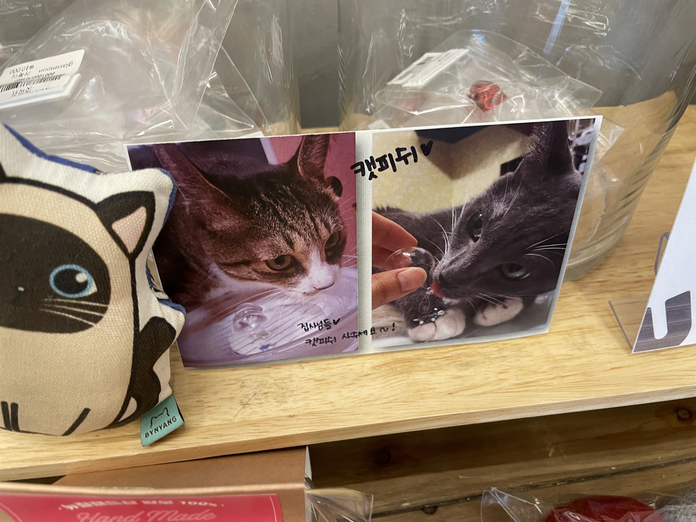

볼거리
쌈지길
종로구 인사동 대표 복합문화공간
쌈지길은 공예품 전문 쇼핑몰로 현재는 핸드메이드, 수공예 작가님들의 작품을 볼 수 있는 아이디어스의 공예품을 전시하고 있어요.
한국의 인간문화재가 만든 최고급의 전통 공예품과 현대 공예 작품,
그리고 한국의 멋이 풍기는 디자인 제품들을 쌈지길에서 만날 수 있어요~
이용 가능한 시간은 10시 30분부터 8시 30분까지이며 휴일은 설날과 추석 당일이에요.

주차장은 따로 없으니 도보로 오시는 게 편할 것 같네요~
오늘 같은 날, 다양한 제품이 많은 쌈지길 방문해 보는 건 어떨까요?